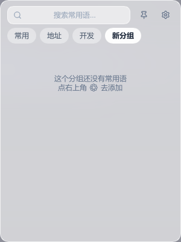
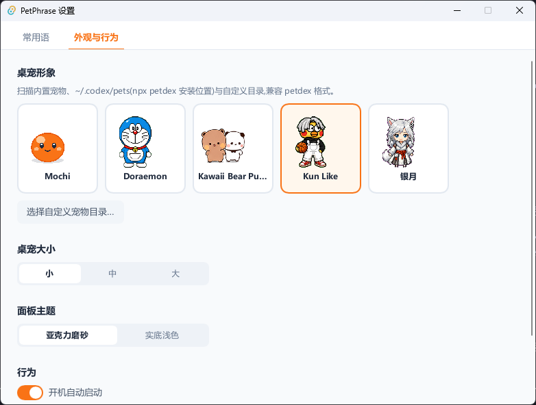
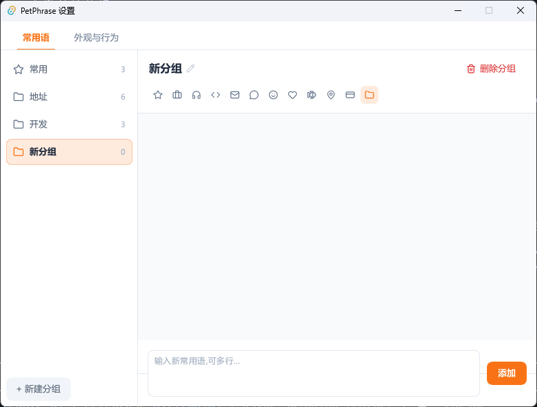
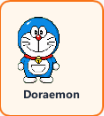

一只桌宠,管好你的
常用语与话术
Windows 桌宠常用语工具:桌宠静坐桌面,点它弹出短语面板,客服话术、快捷回复、代码片段——点一下,已复制,直接去粘贴。
Desktop pet + canned responses for Windows. One-click copy quick replies. Free & open source.
Screenshots
它长什么样
桌宠悬浮桌面,不占任务栏;面板贴宠弹出,复制完自动收起,不打断手头工作。



Features
为「反复要打的那几句话」而生
客服、运营、开发都在重复粘贴同样的内容。PetPhrase 把它们收进分组短语库,取用只要两次点击。
桌宠常驻
透明置顶、待机动画、点击招手;可拖拽、记住位置,大小三档可调。
一键复制
点短语立即进剪贴板,✓ 反馈后面板自动收起;图钉常驻可连续复制多条。
分组管理
分组胶囊 Tab + 全组宫格,12 个图标;搜索跨组过滤;右键就地增删改。
轻量原生
Rust + Slint 单进程,不内嵌浏览器内核;常驻内存约为 WebView 同类方案的 1/10。
数据本地
常用语存在本机,原子写入 + 自动备份,JSON 导入导出;除检查更新外不联网。
一键更新
自动/手动检查新版,SHA256 校验后静默升级,装完自动回到桌面。
petdex 生态
换一只喜欢的桌宠
兼容 petdex 桌宠格式——在 X 上火过的 Codex 桌宠生态,一行命令装新宠,设置里点选即换,无需重启。
npx petdex@latest install kun-like
也支持完全自定义:任意目录放 pet.json + 雪碧图,设置里指定即可。

FAQ
常见问题
关于这款 Windows 常用语 / 快捷回复 / 桌宠剪贴板工具,你可能想问:
PetPhrase 是免费的吗?
完全免费且开源(MIT 协议),代码托管在 GitHub,可自行审计或从源码构建。
支持哪些系统?有 macOS / Linux 版吗?
目前支持 Windows 10 / 11 x64。UI 框架 Slint 本身跨平台,核心逻辑与平台无关,欢迎 macOS / Linux 移植 PR。
和剪贴板历史工具有什么区别?
剪贴板历史记录的是「你复制过什么」,PetPhrase 管理的是「你反复要用什么」——固定短语库按分组整理,点桌宠即取,不会被新复制的内容冲掉。两者互补,不冲突。
安装时 Windows SmartScreen 提示「已保护你的电脑」怎么办?
安装包未购买代码签名证书,SmartScreen 会对未签名程序提示。点「更多信息」→「仍要运行」即可。代码全部开源,安装包由仓库源码构建,每个版本附 SHA256 校验文件,可自行核验。
怎么更换桌宠形象?
在 petdex.dev 挑一只,npx petdex@latest install 宠物名 一行命令装好,打开设置点选即换,无需重启。也支持自定义 pet.json + 雪碧图。
占用资源高吗?会拖慢电脑吗?
Rust + Slint 单进程原生应用,不内嵌浏览器内核:安装包不到 10MB,常驻内存约为 WebView 同类方案的 1/10,冷启动秒开,后台安静不打扰。
我的常用语数据存在哪里?会上传吗?
全部数据保存在本机 %APPDATA%\PetPhrase,原子写入并自动备份,支持 JSON 导入导出。除了检查新版本,应用不联网,任何内容都不会上传。
如何升级到新版本?
内置一键更新:自动或手动检查 GitHub Releases,发现新版一键下载,SHA256 校验后静默升级,装完自动回到桌面,数据不丢。